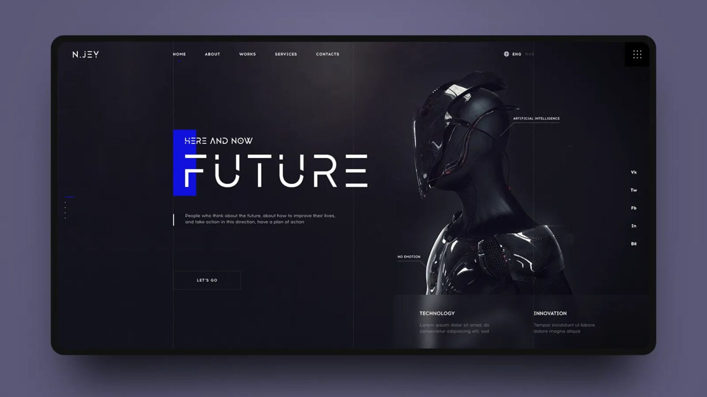

Future of the Internet Browser
In recent years, the browser landscape has started to shift due to the ride in artificial intelligence which has had some pros and cons. Instead of internet users leaning towards the typical search on an internet browser they have looked at ChatGPT, Claude, and Gemini. These artificial intelligent resources may help quickly but often make mistakes and take away from the use of the typical internet browser.
Due to this shift in how users maneuver across their web browsing, many publishers have seen a decline in the visit to their websites which in turn weakens the relationship between some publishers and users (Caswell, 2025). Nevertheless, the artificial intelligence is here and is likely not going anywhere for some time as many see it as an easy thing to access and acquire various pieces of information in a matter of seconds versus spending the time looking around the various sources of information.
As technology continues to change, the use of browsers is likely to shift. The traditional way of browsing has already started to change and will continue to do so. The impacts from artificial intelligence are already proving that any need for a browser is diminishing as time goes on. Even though the use of artificial intelligence is faster and more efficient, it raises so many concerns about privacy and the future of online content. Although an important part of internet browsing, the use of browsers we currently have may not exist in the future depending on how artificial intelligence continues to maneuver and grow.
Future of Web Browsers
